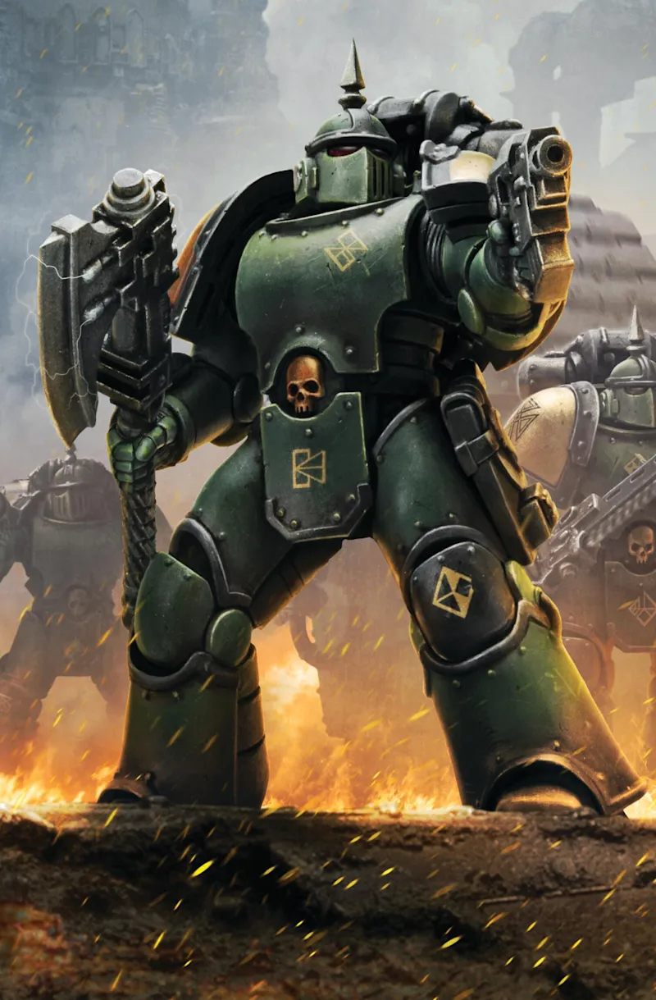

Beginner's guide
Horus Heresy 3rd edition

Using the site offline
- On your phone, open the site in Chrome with an internet connection.
- Wait a few seconds for the page to load completely — this is when the content is downloaded for offline use.
- Tap the three vertical dots (⋮) at the top right.
- Tap "Install app" (sometimes shown directly as a banner at the bottom of the screen, without going through the menu).
- Confirm with "Install".
- An icon with the Emperor's Children emblem appears on your home screen.